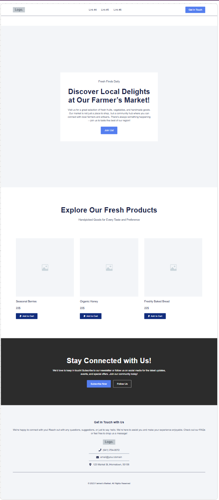
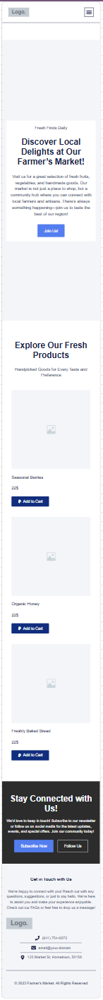

Site Name
Local Farmers' Market Hub
This name was selected because it clearly communicates the purpose of the site - to serve as a central information hub for the local farmers' market. It's simple, descriptive, and easy to remember.
Optional domain availability: localfarmersmarkethub.com
Site Purpose
The Local Farmers' Market Hub website will provide:
- Comprehensive information about the farmers' market (location, hours, seasonal offerings)
- A searchable directory of vendors with categories (produce, baked goods, crafts, etc.)
- An events calendar showing weekly workshops and special activities
- A blog featuring recipes using seasonal produce and vendor spotlights
- A contact form for visitor questions and vendor applications
The site will centralize information that is currently scattered across social media, flyers, and word-of-mouth.
Scenarios
Typical questions from site visitors:
- "What vendors will be at the market this weekend selling organic vegetables?"
- "Are there any cooking demonstrations scheduled for this month that I can attend?"
- "How can I apply to become a vendor at the farmers' market?"
- "What seasonal produce is available right now and how can I use it in recipes?"
Color Schema
Primary Color
#4a7c59 (green)
Used for headers, navigation, and primary buttons
Secondary Color
#f8f4e3 (cream)
Used for background sections and card backgrounds
Accent Color
#d88c9a (dusty pink)
Used for highlights, category tags, and interactive elements
Text Color
#333 (dark gray)
Used for body text and general content
Typography
Playfair Display
Used for all headings (h1, h2, h3, h4)
ABCDEFGHIJKLMNOPQRSTUVWXYZ
abcdefghijklmnopqrstuvwxyz
1234567890!@#$%^&*()
Roboto
Used for body text, navigation, and general content
ABCDEFGHIJKLMNOPQRSTUVWXYZ
abcdefghijklmnopqrstuvwxyz
1234567890!@#$%^&*()
Wireframe
Desktop View
The desktop layout features:
- Full-width navigation bar
- Hero section with market highlights
- Three-column vendor directory
- Two-column blog section
- Full-width footer
Mobile View
The mobile layout features:
- Hamburger menu for navigation
- Single-column layout for all content
- Stacked vendor cards
- Vertical blog post arrangement
- Simplified footer